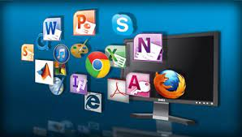
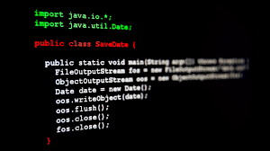

IV Computación
Bachillerato en ciencias y letas
Cursos
|  |  | |
|---|---|---|
Laboratorio |
Sistemas e Instalacion |
Computación aplicada |
Es un instrumento muy completo para el entrenamiento de la comprensión de programas de informática, tales como Excel, Word, Photoshop, Illustrator, AutoCAD, HTML5, etc. Son espacios para estudiar, experimentar y aprender el funcionamiento de programas de informática y practicar su uso. |
Es el proceso fundamental por el cual los nuevos programas son transferidos a un computador con el fin de ser configurados, y preparados para ser desarrollados . |
Emplea las Tecnologías de la Información y Comunicación para analizar problema, procesar la información y proponer soluciones en el desarrollo de proyectos utilizando un lenguaje de programación y su habilidad para implementar al sitios Web. |